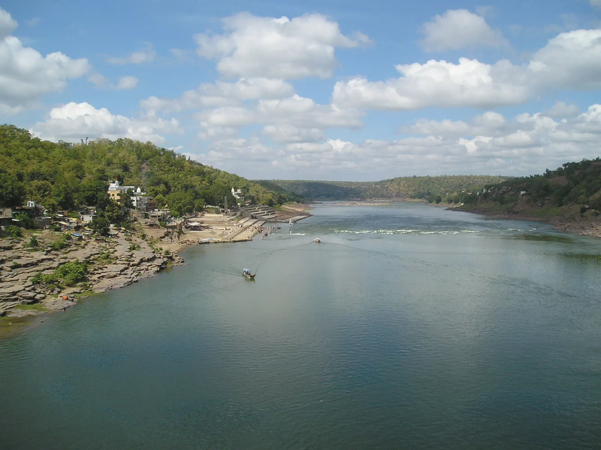
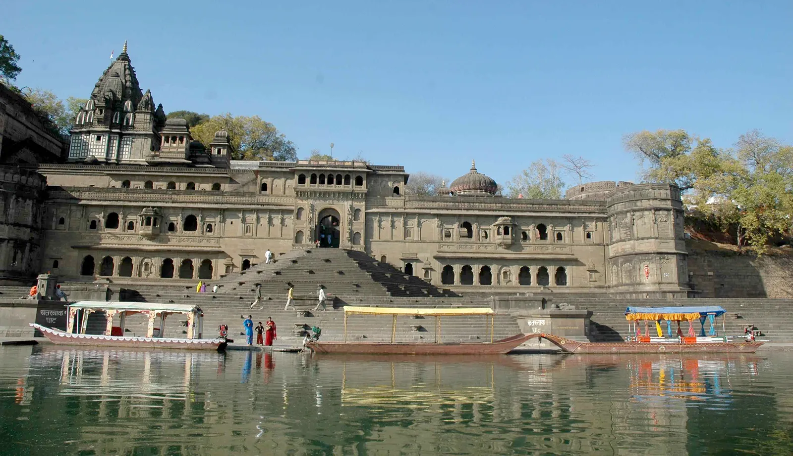

6.Narmada River
Narmada River, also called Narbada or Nerbudda, river in central India that has always been an important route between the Arabian Sea and the Ganges (Ganga) River valley. The river was called Namade by the 2nd-century-CE Greek geographer Ptolemy.
The Narmada rises at an elevation of about 3,500 feet (1,080 metres) in the Maikala Range in eastern Madhya Pradesh state on the border with Chhattisgarh state. It first follows a tortuous course through the hills near Mandla and then turns northwest to pass the city of Jabalpur. There it turns southwest and then enters the structural trough between the Vindhya and Satpura ranges at Marble Rocks Gorge. Turning more westward, the river continues across Madhya Pradesh until it passes into Gujarat state. The Narmada enters the Gulf of Khambhat through an estuary 13 miles (21 km) wide, just below Bharuch.

Draining the northern slopes of the Satpura Range along its 800-mile (1,300-km) course, it flows through the Hoshangabad plains, the Dhar upland, the Mahishmati plains, and the gorges at Mandhata and Murakta. The river has numerous waterfalls, notably the Dhuandhar Falls, southwest of Jabalpur. Its tributaries occasionally cause floods in the valley between the ranges.

Hindus believe the Narmada River sprang from the body of the god Shiva, and in sanctity the Narmada
ranks
after only the Ganges. The pradaksina pilgrimage takes pilgrims from Bharuch to Amarkantak, up one
bank
of
the river and down the other. In addition to Jabalpur, other important cities and towns on its banks
include
Hoshangabad, Maheshwar, Handia, and Mandhata.